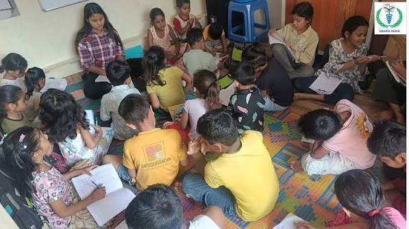
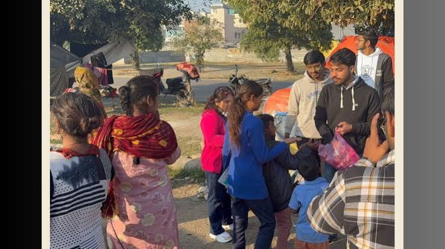
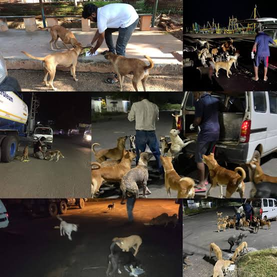
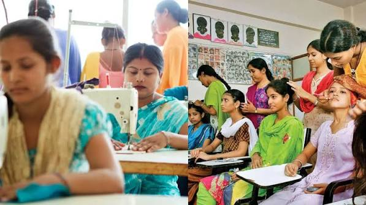
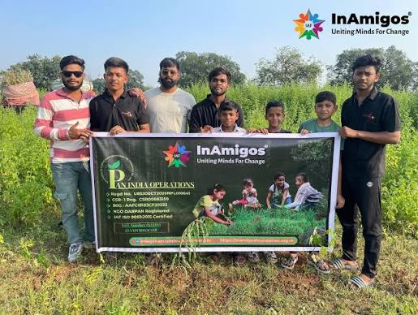
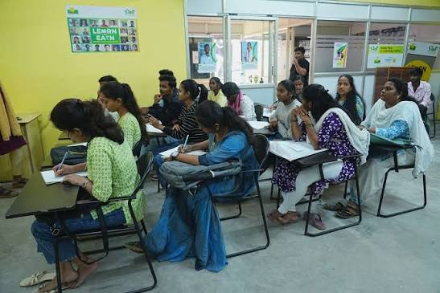
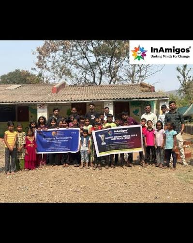

Transforming Lives, Empowering Communities, Building a Better Tomorrow
Creating Positive Change Through Education, Empowerment, Environment and Community Service
InAmigos Foundation was founded on September 23, 2020, by Mr. Govind Shukla (Founder & CEO). It is a Section 8 registered non-profit organization licensed by the Central Government, with its base in Chhattisgarh.
The foundation holds 80G and 12A certifications, ensuring transparency, accountability, and tax-exempt benefits for donors. It is also CSR-1 registered, enabling collaboration with corporate partners for impactful CSR initiatives. Additionally, InAmigos Foundation is NITI Aayog registered and holds the prestigious IAF ISO 9001:2015 certification, reflecting its commitment to high-quality standards and effective service delivery.
Through a strong network of dedicated professionals, volunteers, and corporate partners, InAmigos Foundation works tirelessly to bring positive change in society through education, community welfare, women empowerment, animal welfare, environmental sustainability, and youth development.
At InAmigos Foundation, we believe in the power of collective action. Every contribution supports meaningful initiatives that help create a more inclusive, compassionate, and empowered society across India.

Project Bachpanshala focuses on providing quality education, digital literacy, mentorship, and life-skill development opportunities to underprivileged children, helping them build a brighter and more secure future.

Project Seva supports vulnerable communities through food distribution drives, clothing donation campaigns, blood donation initiatives, and welfare activities aimed at helping families in need.

Project Jeev is dedicated to animal welfare through feeding drives, rescue support, awareness campaigns, and care for stray and injured animals.

Project Udaan empowers women through awareness programs, skill development workshops, leadership training, and opportunities for financial independence.

Project Prakriti promotes environmental conservation through tree plantation drives, sustainability awareness campaigns, and eco-friendly community initiatives.

Project Vikas focuses on youth development through internships, professional training, career guidance, and practical skill-building opportunities.
Beneficiaries Impacted
Dedicated Volunteers
States Reached Across India
Major Social Initiatives
Purpose: To ensure quality education is accessible to underprivileged children.
Impact: Reduces educational inequality and empowers children with knowledge, confidence, and better future opportunities.
Purpose: To support vulnerable communities by fulfilling basic needs such as food and clothing.
Impact: Helps reduce hunger, supports families in need, and promotes community welfare.
Purpose: To protect, rescue, and care for stray and injured animals.
Impact: Improves animal welfare and encourages compassion and responsible care for animals.
Purpose: To empower women through skill development and financial independence.
Impact: Promotes gender equality, confidence, leadership, and self-reliance among women.
Purpose: To encourage environmental conservation and sustainable living practices.
Impact: Contributes to a greener environment and increases awareness about sustainability.
Purpose: To bridge the gap between education and employment through skill development.
Impact: Enhances employability, career readiness, and professional growth among youth.

"Alone we can do so little; together we can do so much."
Every child educated, every family supported, every animal protected, and every tree planted brings us one step closer to a better future. Join InAmigos Foundation and become a part of a movement dedicated to creating positive social impact across India.